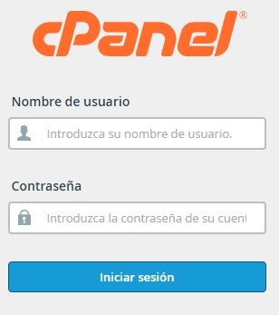
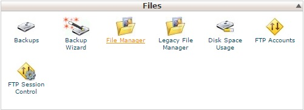
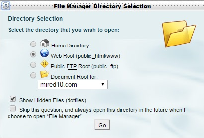
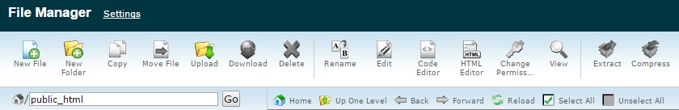
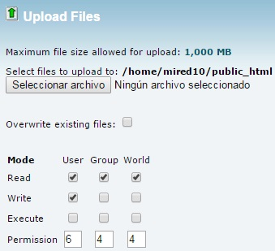
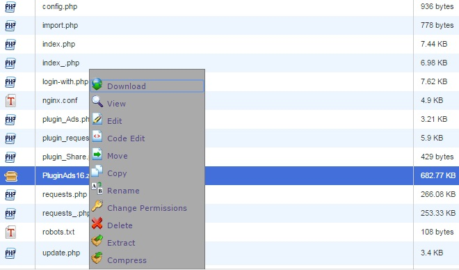
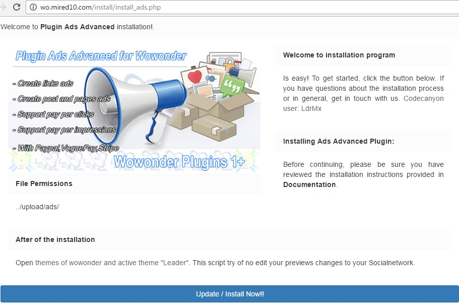
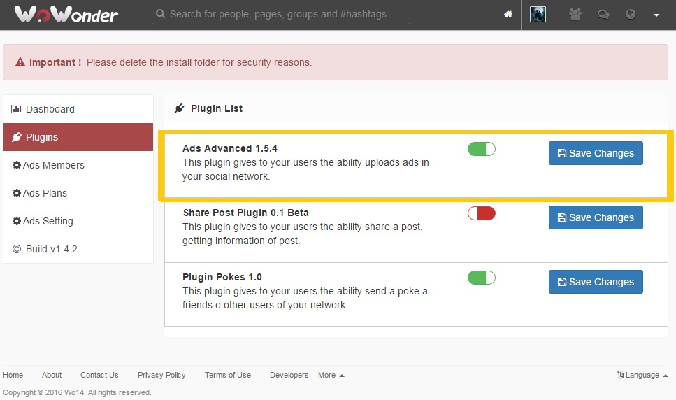

“Plugins For Wowonder” Documentation by “LdrMx
Plugins For Wowonder
Created: Nov 7, 2016
By: LdrMx
Contact Me: Support
Thank you for purchasing our Plugins For Wowonder. If you have any questions that are beyond the scope of this help file, please feel free to contact me using this form.
Table of Contents
1) Preparation - top
Make sure you have the following:
- PHP 5.3 or more
- MySQLi Extension
2) Installation - top
Please follow these steps to setup Plugins For Wowonder:
- Open you cpanel
 - In box Files find filemanage
 - Select Web Root
 - Search in new windows "Update"
 - Select File "Script/" in a zip comprissed select and upload
 - Extract code in Public_html/
 - Open in you website install/install_ads.php and press "install/update"
 - Active or disable plugins in Admin plugins Example URL: http://wo.mired10.com/index.php?link1=admin-plugins
 - Configure.... And ready!!
3) Configurations - top
Configurations and website management can be controlled using the admin panel. The admin panel link is 'admin_plugins.php' and is located in area admin in plugins. Here you can eneable or disable plugin, your have all my list, need purchase all codes for see all plugins working, here you can see new menu create for plugins...
4) FAQ - top
-
Q: I want to modify a text or something about the design...
A: You can change anything visual from the theme located in: /themes/wowonder/layout/. -
Q: I have problems/questions related to the script, how can I contact you?
A: You can e-mail me using the email from this document
5) Structure - top
- MODIFICATION TO SYSTEM
- INSTALLING PLUGINS CONECTION

6) Developers - top
Recommendations:
- Make a copy of the original of your theme and edit it, as it contains all the files required.
Copyright © 2016 Plugins For Wowonder. All rights reserved.
By LdrMx.